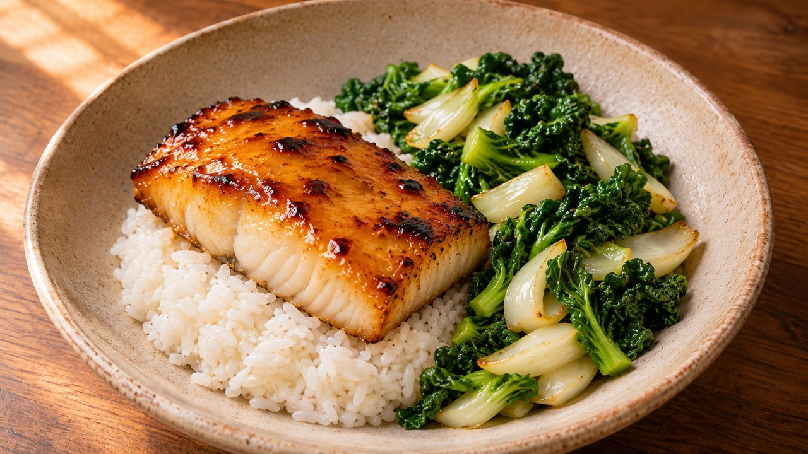

Japanese-inspired · Dinner · Serves 3 · About 45 minutes
Miso Sablefish with Jasmine Rice and Sesame Greens

Ingredient amounts are estimates when scaled. AnyList imports the original quantities.
Ingredients
- 3 sablefish fillets (5–6 oz each), thawed
- 2 Tbsp white miso
- 1 1/2 Tbsp mirin
- 1 Tbsp sake (or water)
- 1 Tbsp sugar
- 1 cup dry jasmine rice
- 1/2 large head bok choy
- 2–3 packed cups chopped chijimisai
- 1 tsp neutral oil
- 1 tsp toasted sesame oil
- 1–2 tsp soy sauce, to taste
Instructions
- Stir the white miso, mirin, sake or water, and sugar until smooth. Pat the fish dry, coat with the marinade, and refrigerate for 20–30 minutes. Cook the jasmine rice according to its package directions while the fish marinates.
- Wash the greens well. Slice the white bok choy stems crosswise about 1/2 inch thick and roughly chop the leaves of both greens. Slice any sturdy chijimisai stems separately.
- Place an oven rack about 6 inches from the broiler and preheat the broiler. Wipe the excess marinade off the fish and place the fillets skin-side down on a foil-lined metal pan. Broil for about 6–9 minutes, watching for scorching. If the glaze browns before the fish is done, move the pan to a lower rack and finish at 400°F. Cook until the center reaches 145°F.
- Heat the neutral oil in a wide skillet over medium-high heat. Stir-fry the bok choy stems for 3–4 minutes, adding any sturdy chijimisai stems for the last minute. Add both sets of leaves and toss for 1–2 minutes until wilted.
- Take the greens off the heat and toss with the toasted sesame oil and soy sauce. Serve with the sablefish and jasmine rice. Set out chili crisp if anyone wants extra heat.